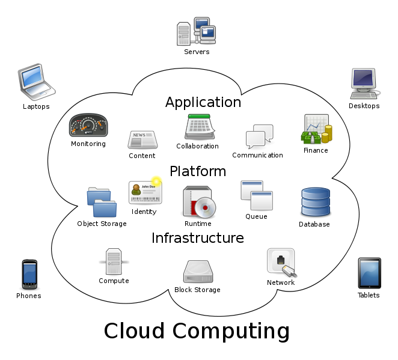

Buku ini saya dedikasikan untuk keluarga saya dan guru-guru saya (anda mungkin salah satu diantaranya!)
Buku bebas dengan lisensi CC-BY-SA CC-BY-SA ini merupakan buku yang dirancang untuk keperluan memberikan pengetahuan mendasar pengembangan aplikasi berbasis Cloud Computing, khususnya menggunakan Node.js. Pada buku ini akan dibahas penggunaan Node.js untuk mengembangkan aplikasi SaaS (Software as a Service). Node.js merupakan software di sisi server yang dikembangkan dari engine JavaScript V8 dari Google serta libuv (Versi sebelum 0.9.0 menggunakan libev dari Mark Lechmann.
Jika selama ini kebanyakan orang mengenal JavaScript hanya di sisi klien (browser), dengan Node.js ini, pemrogram bisa menggunakan JavaScript di sisi server. Meskipun ini bukan hal baru, tetapi paradigma pemrograman yang dibawa oleh Node.js dengan evented - asynchronous I/O menarik dalam pengembangan aplikasi Web (selain kita hanya perlu menggunakan 1 bahasa yang sama di sisi server maupun di sisi klien).
Untuk mengikuti materi yang ada pada buku ini, pembaca diharapkan menyiapkan peranti komputer dengan beberapa software berikut terpasang: - Sistem operasi Linux (distribusi apa saja) - lihat di DistroWatch. Sistem operasi Linux ini bukan keharusan, anda bisa menggunakan Windows tetapi silahkan membuat penyesuaian-penyesuaian sendiri yang diperlukan. Kirimi saya pull request jika anda menuliskan pengalaman anda di Windows! - Git (untuk version control system) - bisa diperoleh di http://git-scm.com. Saya menggunakan versi 1.8.2.2. - mongoDB (basis data NOSQL) - bisa diperoleh di http://www.mongodb.org, saya menggunakan versi 2.4.4-pre- - Vim (untuk mengedit source code) - bisa diperoleh di http://www.vim.org. Jika tidak terbiasa menggunakan Vim, bisa menggunakan editor teks lainnya (atau IDE), misalnya gedit (ada di GNOME), geany (http://geany.org), KATE (ada di KDE), dan lain-lain.
Software utama untuk keperluan workshop ini yaitu Node.js serta command line tools dari provider Cloud Computing (materi ini menggunakan fasilitas dari CloudFoundry), akan dibahas pada pada bab-bab tertentu. Materi akan lebih banyak berorientasi ke command line / shell sehingga para pembaca sebaiknya sudah memahami cara-cara menggunakan shell di Linux. Anda bisa menggunakan shell apa saja (bash, tcsh, zsh, ksh, dan lain-lain), saya menggunakan bash 4.2.45(2)-release.
Have fun!
Pengenalan Cloud Computing dan Infrastruktur Pengembangan Aplikasi Berbasis Node.js
Apa itu Cloud Computing?
Cloud Computing, atau sering diterjemahkan sebagai ``Komputasi Awan'' dalam bahasa Indonesia mempunyai berbagai definisi:
-
Wikipedia: penggunaan sumber daya komputasi (peranti keras dan peranti lunak) yang berfungsi untuk memberikan layanan melalui suatu jaringan (pada umumnya Internet)[1].
-
NIST[2]: model yang memungkinkan akses jaringan ubiquitous (dari mana saja), nyaman, on-demand (saat ada permintaan) ke sekumpulan sumber daya komputasi yang dikonfigurasi untuk berbagi (jaringan, server, penyimpanan, dan berbagai layanan lain) yang dapat dengan cepat ditetapkan dan dirilis dengan usaha yang minimal dari manajemen ataupun interaksi dengan penyedia layanan[3].

Karakteristik Cloud Computing
Menurut NIST, ada beberapa karakteristik dari Cloud Computing:
-
On-demand self-service: layanan bisa diperoleh pada saat diminta, tanpa intervensi atau interaksi manusia di sisi penyedia jasa.
-
Broad network access: tersedia melalui jaringan dengan berbagai peranti yang umum (komputer, tablet, HP, dan lain-lain)
-
Resource pooling: sumber daya komputasi dari penyedia jasa terkumpul untuk melayani.
-
Rapid elasticity: skalabilitas.
-
Measured service: penggunaan sumber daya bisa diukur, di-monitor, dikendalikan, dan dilaporkan.
Karakteristik lain yang tidak kalah penting adalah multitenancy. Multitenancy merupakan suatu prinsip dalam arsitektur software. Pada arsitektur tersebut, satu instan dari software berjalan pada server, melayani banyak organisasi klien. Aplikasi dirancang untuk mempartisi data dan konfigurasinya secara virtual dan setiap organisasi klien tersebut bekerja dengan instan aplikasi virtual tersebut[5].
Public dan Private Cloud Computing
Cloud Computing bisa dibangun untuk keperluan pribadi suatu organisasi dan (secara legal) hanya bisa diakses oleh organisasi yang bersangkutan. Tipe tersebut dikenal dengan Private Cloud Computing. Sementara itu, jika sumber daya Cloud Computing bisa diakses oleh publik (dengan hak akses yang sesuai), maka model tersebut dikenal sebagai Public Cloud Computing. Pembahasan di buku ini adalah pembahasan tentang Public Cloud Computing dan semua referensi tentang Cloud Computing di buku ini akan menunjuk pada Public Cloud Computing kecuali dinyatakan lain.
Model Layanan Cloud Computing
Model layanan pada Cloud Computing akan berkembang sesuai kebutuhan konsumen serta inovasi dari berbagai penyedia layanan. Saat ini, pada umumnya, ada tiga model layanan:
-
SaaS (Software as a Service): layanan berupa aplikasi yang ditempatkan pada infrastruktur penyedia layanan, siap digunakan oleh konsumen.
-
PaaS (Platform as a Service): menyediakan layanan ke konsumen berupa platform untuk men-deploy aplikasi.
-
IaaS (Infrastructure as a Service): menyediakan layanan ke konsumen berupa berbagai sumber daya komputasi (pemrosesam, penyimpanan, jaringan, dan sumber daya fundamental lainnya).
Meski sampai saat ini, umumnya terdapat tiga model tersebut, beberapa model kelihatannya sudah mulai muncul, misalnya STaaS (Storage as a Service), SECaaS (Security as a Service), DaaS (Data as a Service), TEaaS (Test Environment as a Service), Desktop Virtualization, APIaaS (API as a Service).
Pengembangan Aplikasi di Cloud Computing
Pada umumnya, para pengembang aplikasi di Cloud Computing juga menggunakan pendekatan Agile Software Development yang berbasis pada pengembangan secara iteratif untuk setiap milestone (dalam iterasi analisis-desain-coding-testing-debugging) mulai dari milestone paling awal sampai software dirilis. Perbedaan paling mendasar hanyalah pada platform yang digunakan untuk deployment, peranti pengembangan yang digunakan, serta utilitas untuk mengelola aplikasi yang di-deploy pada instan di cloud.
Pengembangan aplikasi di Cloud Computing akan melibatkan peranti pengembang yang didukung oleh infrastruktur Cloud. Kita akan memerlukan PaaS untuk keperluan ini. Pada dasarnya pengembangan aplikasi akan meliputi siklus berikut:
-
Coding
-
Test di komputer lokal
-
Upload ke server (dalam Cloud Computing, proses ini diistilahkan dengan ``push''
-
Edit - push
Jika pengembangan aplikasi dilakukan oleh tim, maka perlu adanya software untuk version control, misalnya Git, mercurial, dan lain-lain. Setelah itu, aktivitas yang dilakukan biasanya terpusat pada push (untuk mengupload instan dari aplikasi ke server) dan pull (untuk mengambil instan aplikasi dari server).
Node.js dan Cloud Computing
Node.js merupakan salah satu peranti pengembang yang bisa digunakan untuk membuat aplikasi berbasis Cloud. Node.js dikembangkan dari engine JavaScript yang dibuat oleh Google untuk browser Chrome / Chromium (V8) ditambah dengan libUV serta beberapa pustaka internal lainnya. Dengan menggunakan Node.js, semua pengembangan akan dilakukan menggunakan JavaScript, baik pada sisi klien maupun server. Node.js dibuat pertama kali oleh Ryan Dahl (twitter.com/ryah) dan sampai saat ini dikembangkan oleh komunitas sebagai software bebas dengan pendanaa utama dari Joyent, perusahaan tempat Ryan Dahl bekerja.
REPL dan Dasar-dasar JavaScript di Node.js
REPL
REPL adalah lingkungan pemrograman interaktif, tempat developer bisa mengetikkan program per baris dan langsung mengeksekusi hasilnya. Biasanya ini digunakan untuk menguji perintah-perintah yang cukup dijalankan pada satu baris atau satu blok segmen kode sumber saja. Karena fungsinya itu, maka istilah yang digunakan adalah REPL (read-eval-print-loop), yaitu loop atau perulangan baca perintah - evaluasi perintah - tampilkan hasil. REPL sering juga disebut sebagai interactive top level atau language shell. "Tradisi" ini sudah dimulai sejak jaman LISP di mesin UNIX di era awal pengembangan development tools. Saat ini hampir semua interpreter/compiler mempunyai REPL, misalnya Python, Ruby, Scala, PHP, berbagai interpreter/compiler LISP, dan tidak ketinggalan Node.js.
Mengaktifkan REPL
Untuk mengaktifkan REPL dari Node.js, executable command line program-nya adalah node (atau nodejs pada beberapa sistem operasi, misalnya Ubuntu Linux). Jika node dipanggil dengan argumen nama file JavaScript, maka file JavaScript tersebut akan dieksekusi, sementara jika tanpa argumen, akan masuk ke REPL:
Tanda > adalah tanda bahwa REPL Node.js siap untuk menerima perintah. Untuk melihat perintah-perintah REPL, bisa digunakan .help.
Perintah-perintah REPL
Pada sesi REPL, kita bisa memberikan perintah internal REPL maupun perintah-perintah lain yang sesuai dan dikenali sebagai perintah JavaScript. Perintah internal REPL Node.js terdiri atas:
-
.break: keluar dan melepaskan diri dari "keruwetan" baris perintah di REPL.
-
.clear: alias untuk .break
-
.exit: keluar dari sesi REPL (bisa juga dengan menggunakan Ctrl-D)
-
.help: menampilkan pertolong perintah internal REPL
-
.load: membaca dan mengeksekusi perintah-perintah JavaScript yang terdapat pada suatu file.
-
.save: menyimpan sesi REPL ke dalam suatu file.
Contoh untuk .load:
Setelah keluar dari sesi REPL, maka port akan ditutup dan hasil eksekusi di atas akan dibatalkan.
Untuk menyimpan hasil sesi REPL menggunakan .save, jika tanpa menyebutkan direktori, maka akan disimpan di direktori aktif saat itu. Contoh:
Dasar-dasar JavaScript di Node.js
Node.js merupakan sistem peranti lunak yang merupakan implementasi dari bahasa pemrograman JavaScript. Spesifikasi JavaScript yang diimplementasikan merupakan spesifikasi resmi dari ECMAScript serta CommonJS (http://commonjs.org). Dengan demikian, jika anda sudah pernah mempelajari JavaScript sebelumnya, tata bahasa dari perintah yang dipahami oleh Node.js masih tetap sama dengan JavaScript.
Membaca Masukan dari Stream / Masukan Standar (stdin)
Untuk lebih memahami dasar-dasar JavaScript serta penerapannya di Node.js, seringkali kita perlu melakukan simulasi pertanyaan - proses - keluaran jawaban. Proses akan kita pelajari seiring dengan materi-materi berikutnya, sementara untuk keluaran, kita bisa menggunakan console.log. Bagian ini akan menjelaskan sedikit tentang masukan.
Perintah untuk memberi masukan di Node.js sudah tersedia pada pustaka API _Readline_[6]. Pola dari masukan ini adalah sebagai berikut:
-
me-require pustaka Readline
-
membuat interface untuk masukan dan keluaran
-
.. gunakan interface ..
-
.. gunakan interface ..
-
.. gunakan interface ..
-
.. gunakan interface ..
-
..
-
..
-
tutup interface
Implementasi dari pola diatas bisa dilihat pada kode sumber berikut ini (diambil dari manual Node.js):
var readline = require('readline');
var rl = readline.createInterface({
input: process.stdin,
output: process.stdout
});
rl.question("What do you think of node.js? ", function(answer) {
console.log("Thank you for your valuable feedback:", answer);
rl.close();
});
// hasil:
// $ node readline.js
// What do you think of node.js? awesome!
// Thank you for your valuable feedback: awesome!
// $
NOTES: function(answer) pada listing di atas merupakan anonymous function atau fungsi anonimus (sering juga disebut lambda function / fungsi lambda. Posisi fungsi pada listing tersebut disebut dengan fungsi callback. Untuk keperluan pembahasan saat ini, untuk sementara yang perlu dipahami adalah hasil input akan dimasukkan ke answer untuk diproses lebih lanjut. Fungsi dan callback akan dibahas lebih lanjut pada pembahasan berikutnya.
Nilai/Value dan Tipe Data
Program dalam JavaScript akan berhubungan dengan data atau nilai. Setiap nilai mempunyai tipe tertentu. JavaScript mengenali berbagai tipe berikut ini:
-
Angka: bulat (misalnya 4) atau pecahan (misalnya 3.75)
-
Boolean: nilai benar (true) dan salah (false)
-
String: diapit oleh tanda petik ganda (``contoh string'') atau tunggal (’contoh string’)
-
null
-
undefined
JavaScript adalah bahasa pemrograman yang mengijinkan pemrogram untuk tidak mendefinisikan tipe data pada saat deklarasi, atau sering juga disebut sebagai dynamically typed language:
Pada contoh di atas, kita bisa melihat bahwa data akan dikonversi secara otomatis pada saat program dieksekusi.
NOTES: Khusus untuk operator ``+'', JavaScript akan melakukan penggabungan string (string concatenation), tetapi untuk operator lain, akan dilakukan operasi matematis sesuai operator tersebut (-,/,*). Konversi string ke tipe numerik bisa dilakukan dengan parseInt(string) (jika bilangan bulat) dan parseFloat(string) (jika bilangan pecahan).
Variabel
Variabel adalah suatu nama yang didefinisikan untuk menampung suatu nilai. Nama ini akan digunakan sebagai referensi yang akan menunjukkan ke nilai yang ditampungnya. Nama variabel disebut dengan identifier / pengenal. Ada beberapa syarat pemberian nama identifier di JavaScript:
-
Dimulai dengan huruf, underscore (_), atau tanda dollar ($).
-
Karakter berikutnya bisa berupa angka, selain ketentuan pertama di atas.
-
Membedakan huruf besar - kecil.
Konvensi yang digunakan oleh pemrogram JavaScript terkait dengan penamaan ini adalah variasi dari metode camel case, yaitu camelBack. Contoh: jumlahMahasiswa, linkMenu, status.
Konstanta
Konstanta mirip dengan variabel, hanya saja sifatnya read-only, tidak bisa diubah-ubah setelah ditetapkan. Untuk menetapkan konstanta di JavaScript, digunakan kata kunci const. Contoh:
Konvensi penamaan konstanta adalah menggunakan huruf besar semua. Bagian ini (sampai saat buku ini ditulis) hanya berlaku di Firefox dan Google Chrome - V8 (artinya berlaku juga untuk Node.js).
Fungsi
Pengertian Fungsi
Fungsi merupakan subprogram atau suatu bagian dari keseluruhan program yang ditujukan untuk mengerjakan suatu pekerjaan tertentu dan (biasanya) menghasilkan suatu nilai kembalian. Subprogram ini relatif independen terhadap bagian-bagian lain sehingga memenuhi kaidah ``bisa-digunakan-kembali'' atau reusable pada beberapa program yang memerlukan fungsionalitasnya. Fungsi dalam ilmu komputer sering kali juga disebut dengan prcedure, routine, atau method.
Definisi Fungsi
Definisi fungsi dari JavaScript di Node.js bisa dilakukan dengan sintaksis berikut ini:
Setelah dideklarasikan, fungsi tersebut bisa dipanggil dengan cara sebagai berikut:
Contoh dalam program serta pemanggilannya adalah sebagai berikut:
Fungsi Anonim
Fungsi anonim adalah fungsi tanpa nama, pemrogram tidak perlu memberikan nama ke fungsi. Biasanya fungsi anonimus ini hanya digunakan untuk fungsi yang dikerjakan pada suatu bagian program saja dan tidak dengan maksud untuk dijadikan komponen yang bisa dipakai di bagian lain dari program (biasanya untuk menangani event atau callback). Untuk mendeklarasikan fungsi ini, digunakan literal function.
Fungsi Rekursif
Fungsi rekursif adalah fungsi yang memanggil dirinya sendiri. Contoh dari aplikasi fungsi rekursif adalah pada penghitungan faktorial berikut:
Fungsi di dalam Fungsi / Nested Functions
Saat mendefinisikan fungsi, di dalam fungsi tersebut pemrogram bisa mendefinisikan fungsi lainnya. Meskipun demikian, fungsi yang terletak alam suatu definisi fungsi tidak bisa diakses dari luar fungsi tersebut dan hanya tersedia untuk fungsi yang didefinisikan.
Literal
Literal digunakan untuk merepresentasikan nilai dalam JavaScript. Ada beberapa tipe literal.
Literal Array
Array atau variabel berindeks adalah penampung untuk obyek yang menyerupai list atau daftar. Obyek array juga menyediakan berbagai fungsi dan metode untuk mengolah anggota yang terdapat dalam daftar tersebut (terutama untuk operasi traversal dan permutasi. Listing berikut menunjukkan beberapa operasi untuk literal array.
Literal Boolean
Literal boolean menunjukkan nilai benar (true) atau salah (false).
Literal Integer
Literal integer digunakan untuk mengekspresikan nilai bilangan bulat. Nilai bulangan bulat dalam JavaScript bisa dalam bentuk:
-
decimal (basis 10): digit tanpa awalan nol.
-
octal (basis 8): digit diawali dengan 1 angka nol.[7]
-
hexadecimal (basis 16): digit diawali dengan 0x.
Literal Floating-point
Literal ini digunakan untuk mengekspresikan nilai bilangan pecahan, misalnya 0.4343 atau bisa juga menggunakan E/e (nilai eksponensial), misalnya -3.1E12.
Literal Obyek
Literal ini akan dibahas di bab yang menjelaskan tentang paradigma pemrograman berorientasi obyek di JavaScript.
Literal String
Literal string mengekspresikan suatu nilai dalam bentuk sederetan karakter dan berada dalam tanda petik (ganda/`’' maupun tunggal/”). Contoh:
-
``Kembali ke halaman utama''
-
’Lisensi’
-
``Hari ini, Jum’at, tanggal 21 November''
-
``1234.543''
-
`baris pertama `\nbaris kedua''
Contoh terakhir di atas menggunakan karakter khusus (\n). Beberapa karakter khusus lainnya adalah:
-
\b: Backspace -
\f: Form feed -
\n: New line -
\r: Carriage return -
\t: Tab -
\v: Vertical tab -
\': Apostrophe atau single quote -
\": Double quote -
\\: Backslash (\). -
\XXX: Karakter dengan pengkodean Latin-1 dengan tiga digit octal antara 0 and 377. (misal, `\`251 adalah simbol hak cipta). -
\xXX: seperti di atas, tetapi hexadecimal (2 digit). -
\uXXXX: Karakter Unicode dengan 3 digit karakter hexadecimal.
Backslash sendiri sering digunakan sebagai escape character, misalnya NaN sering disebut juga sebagai ’'.`''Not a Number\
Struktur Data dan Representasi JSON
JSON (JavaScript Object Notation) adalah subset dari JavaScript dan merupakan struktur data native di JavaScript. Bentuk dari representasi struktur data JSON adalah sebagai berikut[8]:
Dari representasi di atas, kita bisa membaca:
-
Nilai data
firstname'' adalahJohn'' -
Data
address'' terdiri atas sub datastreetAddress'',city'',state'', dan ``postalCode'' yang masing-masing mempunyai nilai data sendiri-sendiri. -
dan seterusnya
Aliran Kendali
Alur program dikendalikan melalui pernyataan-pernyataan untuk aliran kendali. Ada beberapa pernyataan aliran kendali yang akan dibahas.
Pernyataan Kondisi if .. else if .. else
Pernyataan ini digunakan untuk mengerjakan atau tidak mengerjakan suatu bagian atau blok program berdasarkan hasil evaluasi kondisi tertentu.
Pernyataan switch
Pernyataan ini digunakan untuk mengevaluasi suatu ekspresi dan membandingkan sama atau tidaknya dengan suatu label tertentu di dalam struktur pernyataan switch, serta mengeksekusi perintah-perintah sesuai dengan label yang cocok.
Looping
Looping atau sering juga disebut ``kalang'' adalah konstruksi program yang digunakan untuk melakukan suatu blok perintah secara berulang-ulang.
for
Pernyataan ``for'' juga bisa digunakan untuk mengakses data yang tersimpam dalam struktur data JavaScript (JSON).
do .. while
Pernyataan ini digunakan untuk mengerjakan suatu blok program selama suatu kondisi bernilai benar dengan jumlah minimal pengerjaan sebanyak 1 kali.
while
Seperti do .. while, pernyataan ini digunakan untuk mengerjakan suatu blok program secara berulang-ulang selama kondisi bernilai benar. Meskipun demikian, bisa saja blok program tersebut tidak pernah dikerjakan jika pada saat awal expresi dievaluasi sudah bernilai false.
label, break, dan continue
Bagian ini digunakan dalam looping dan switch.
-
label digunakan untuk memberi pengenal pada suatu lokasi program sehingga bisa direferensi oleh break maupun continue (jikaa dikehendaki).
-
break digunakan untuk menghentikan eksekusi dan meneruskan alur program ke pernyataan setelah looping atau switch
-
continue digunakan untuk meneruskan eksekusi ke iterasi atau ke kondisi switch berikutnya.
Penanganan Error
JavaScript mendukung pernyataan try .. catch .. finally serta throw untuk menangani error. Meskipun demikian, banyak hal yang tidak sesuai dengan konstruksi ini karena sifat JavaScript yang asynchronous. Untuk kasus asynchrous, pemrogram lebih disarankan menggunakan function callback. Jika diperlukan, kita bisa mendefinisikan sendiri error dengana menggunakan pernyataan throw.
Paradigma Pemrograman di JavaScript
Pemrograman Fungsional
Pemrograman fungsional, atau sering disebut functional programming, selama ini lebih sering dibicarakan di level para akademisi. Meskipun demikian, saat ini terdapat kecenderungan paradigma ini semakin banyak digunakan di industri. Contoh nyata dari implementasi paradigma ini di industri antara lain adalah Scala (http://www.scala-lang.org), OCaml (http://www.ocaml.org), Haskell (http://www.haskell.org), Microsoft F# (http://fsharp.org), dan lain-lain. Dalam konteks paradigma pemrograman, peranti lunak yang dibangun menggunakan pendekatan paradigma ini akan terdiri atas berbagai fungsi yang mirip dengan fungsi matematis. Fungsi matematis tersebut di-evaluasi dengan penekanan pada penghindarana state serta mutable data. Bandingkan dengan paradigma pemrograman prosedural yang menekankan pada immutable data dan definisi berbagai prosedur dan fungsi untuk mengubah state serta data.
JavaScript bukan merupakan bahasa pemrograman fungsional yang murni, tetapi ada banyak fitur dari pemrograman fungsional yang terdapat dalam JavaScript. Dalam hal ini, JavaScript banyak dipengaruhi oleh bahasa pemrograman Scheme (http://www.schemers.org/). Bab ini akan membahas beberapa fitur pemrograman fungsional di JavaScript. Pembahasan ini didasari pembahasan di bab sebelumnya tentang Fungsi di JavaScript.
Ekspresi Lambda
Ekspresi lambda / lambda expression merupakan hasil karya dari ALonzo Church sekitar tahun 1930-an. Aplikasi dari konsep ini di dalam pemrograman adalah penggunaan fungsi sebagai parameter untuk suatu fungsi. Dalam pemrograman, lambda function sering juga disebut sebagai fungsi anonimus (fungsi yang dipanggil/dieksekusi tanpa ditautkan (bound) ke suatu identifier). Berikut adalah implementasi dari konsep ini di JavaSCript:
Higher-order Function
Higher-order function (sering disebut juga sebagai functor adalah suatu fungsi yang setidak-tidaknya menggunakan satu atau lebih fungsi lain sebagai parameter dari fungsi, atau menghasilkan fungsi sebagai nilai kembalian.
Closure
Suatu closure merupakan definisi suatu fungsi bersama-sama dengan lingkungannya. Lingkungan tersebut terdiri atas fungsi internal serta berbagai variabel lokal yang masih tetap tersedia saat fungsi utama / closure tersebut selesai dieksekusi.
Currying
Currying memungkinkan pemrogram untuk membuat suatu fungsi dengan cara menggunakan fungsi yang sudah tersedia secara parsial, artinya tidak perlu menggunakan semua argumen dari fungsi yang sudah tersediaa tersebut.
Pemrograman Berorientasi Obyek
Pengertian
Pemrograman Berorientasi Obyek (selanjutnya akan disingkat PBO) adalah suatu paradigma pemrograman yang memandang bahwa pemecahan masalah pemrograman akan dilakukan melalui definisi berbagai kelas kemudian membuat berbagai obyek berdasarkan kelas yng dibuat tersebut dan setelah itu mendefinisikan interaksi antar obyek tersebut dalam memecahkan masalah pemrograman. Obyek bisa saling berinteraksi karena setiap obyek mempunyai properti (sifat / karakteristik) dan method untuk mengerjakan suatu pekerjaan tertentu. Jadi, bisa dikatakan bahwa paradigma ini menggunakan cara pandang yang manusiawi dalam penyelesaian masalah.
Dengan demikian, inti dari PBO sebenarnya terletak pada kemampuan untuk mengabstraksikan berbagai obyek ke dalam kelas (yang terdiri atas properti serta method). Paradigma PBO biasanya juga mencakup inheritance atau pewarisan (sehingga terbentuk skema yang terdiri atas superclass dan subclass). Ciri lainnya adalah polymorphism dan encapsulation / pengkapsulan.
JavaScript adalah bahasa pemrograman yang mendukung PBO dan merupakan implementasi dari ECMAScript. Implementasi PBO di JavaScript adalah prototype-based programming yang merupakan salah satu subset dari PBO. Pada prototype-based programming, kelas / class tidak ada. Pewarisan diimplementasikan melalui prototype.
Definisi Obyek
Definisi obyek dilakukan dengan menggunakan definisi function, sementara this digunakan di dalam definisi untuk menunjukkan ke obyek tersebut. Sementara itu, Kelas.prototype.namaMethod digunakan untuk mendefinisikan method dengan nama method namaMethod pada kelas Kelas. Perhatikan contoh pada listing berikut.
Inheritance / Pewarisan
Pewarisan di JavaScript bisa dicapai menggunakan prototype. Listing program berikut memperlihatkan bagaimana pewarisan diimplementasikan di JavaScript.
Mengelola Paket Menggunakan npm
Apakah npm Itu?
Node.js memungkinkan developer untuk mengembangkan aplikasi secara modular dengan memisahkan berbagai komponen reusable code ke dalam pustaka (library). Berbagai pustaka tersebut bisa diperoleh di http://npmjs.org. Node.js menyediakan perintah npm untuk mengelola paket pustaka di repositori tersebut. Untuk menggunakan utilitas ini,pemrogram harus terkoneksi dengan Internet.
Menggunakan npm
Saat melakukan instalasi Node.js, secara otomatis npm akan disertakan. Dengan perintah npm tersebut, seorang pemrogram bisa mengelola pustaka yang tersedia di repositori. Jika pemrogram mempunya pustakan yang bisa digunakan oleh orang lain, maka pemrogram yang bersangkutan juga bisa menyimpan pustaka tersebut ke dalam repositori sehingga memungkinkan untuk diinstall oleh pemrogram-pemrogram lain di seluruh dunia. Sintaksis lengkap dari penggunaan perintah npm ini adalah sebagai berikut[9]:
Pada bagian berikut, kita akan membahas lebih lanjut penggunaan perintah npm tersebut.
Instalasi Paket
npm sebenarnya bukan merupakan singkatan dari Node Package Manager, meskipun seringkali orang menterjemahkan dengan singkatan tersebut dan npm seharusnya ditulis dalam huruf kecil semua seperti yang dijelaskan pada FAQ (Frequently Asked Questions)[10]. npm merupakan bilah alat berbasis baris perintah, dijalankan melalui shell atau command prompt. Sama seperti kebanyakan bilah alat berbasis baris perintah lain, npm memiliki struktur perintah npm perintah argumen. Installasi paket pustaka dilakukan dengan perintah berikut:
Perintah diatas akan memasang versi terakhir dari paket ``namapaket''. Selain itu npm juga dapat memasang paket langsung pada sebuah folder, tarball atau tautan untuk sebuah tarball.
Struktur Instalasi Paket Node.js
Dalam installasi paket pustaka, berkas-berkas akan terletak dalam folder lokal aplikasi node_modules. Pada mode installasi paket pustaka global (dengan -g atau –global dibelakang baris perintah), paket pustaka akan dipasang pada /usr/lib/node_modules (dengan lokasi installasi Node.js standar). Mode global memungkinkan paket pustaka digunakan tanpa memasang paket pustaka pada setiap folder lokal aplikasi. Mode global ini juga membutuhkan hak administrasi lebih (sudo atau root) dari pengguna agar dapat menulis pada lokasi standar.
Jika berada pada direktori $HOME, maka paket-paket npm tersebut akan terinstall di $HOME/.npm, sedangkan jika kita berada di luar direktori $HOME, maka paket-paket tersebut akan terinstall di $CWD/node_modules ($CWD = Current Working Directory - direktori aktif saat ini). Daftar paket pustaka yang terpasang dapat dilihat menggunakan perintah berikut:
Selain melihat daftar paket pustaka yang digunakan dalam aplikasi maupun global, perintah diatas juga akan menampilkan paket dependensi dalam struktur pohon. Jika kita belum menginstall paket-paket yang diperlukan, akan muncul peringatan. Berikut ini adalah contoh peringatan dari paket-paket yang belum terinstall di aplikasi hello-express saat mengerjakan perintah ``npm ls'' di direktori tempat aplikasi tersebut berada (lihat bab 1):
Jika sudah terinstall, perintah ``npm ls'' akan menampilkan struktur dari paket yang telah terinstall dalam bentuk struktur pohon seperti pada Gambar [fig:npm-ls-paket-terinstall].

Menghapus Paket / Uninstall
Menghapus paket pustaka menggunakan npm pada dasarnya hampir sama dengan saat memasang paket, namun dengan perintah uninstall. Berikut perintah lengkapnya.
Mencari Paket
Untuk mencari paket, gunakan argumen search dan nama atau bagian dari nama paket yang dicari. Contoh berikut ini akan mencari paket dengan kata kunci ’sha512’ (tampilan berikut merupakan tampilan yang terpotong):
Setelah menemukan paketnya, pemrogram bisa menginstall langsung ataupun melihat informasi lebih lanjut tentang pustakan tersebut.
Menampilkan Informasi Paket
Setelah mengetahui nama paket, pemrogram bisa memperoleh informasi lebih lanjut dalam format JSON menggunakan parameter view. Contoh dibawah ini menampilkan rincian dalam format JSON dari paket arango.client:
Memperbaharui Paket
Jika terdapat versi baru, kita bisa memperbaharui secara otomatis menggunakan argumen update berikut ini:
Node.js dan Web: Teknik Pengembangan Aplikasi
Pendahuluan
Pada saat membangun aplikasi Cloud dengan antarmuka web menggunakan Node.js, ada beberapa teknik pemrograman yang bisa digunakan. Bab ini akan membahas berbagai teknik tersebut. Untuk mengerjakan beberapa latihan di bab ini, digunakan suatu file dengan format JSON. File pegawai.json berikut ini akan digunakan dalam pembahasan selanjutnya.
Jika ingin memeriksa validitas dari data berformat JSON, pemrogram bisa menggunakan validator di http://jsonlint.com.
Event-Driven Programming dan EventEmitter
Event-Driven Programming (selanjutnya akan disebut EDP) atau sering juga disebut Event-Based Programming merupakan teknik pemrograman yang menggunakan event atau suatu kejadian tertentu sebagai pemicu munculnya suatu aksi serta aliran program. Contoh event misalnya adalah sebagai berikut:
-
Menu dipilih.
-
Tombol ``Submit'' di klik.
-
Server menerima permintaan dari klien.
Pada dasarnya ada beberapa bagian yang harus disiapkan dari paradigma dan teknik pemrograman ini:
-
main loop atau suatu konstruksi utama program yang menunggu dan mengirimkan sinyal event.
-
definisi dari berbagai event yang mungkin muncul
-
definisi event-handler untuk menangani event yang muncul dan dikirimkan oleh main loop
Node.js merupakan peranti pengembangan yang menggunakan teknik pemrograman ini. Pada Node.js, EDP ini semua dikendalikan oleh kelas events.EventEmitter. Jika ingin menggunakan kelas ini, gunakan require(’events’). Dalam terminologi Node.js, jika suatu event
terjadi, maka dikatakan sebagai emits an event, sehingga yang digunakan untuk menangani itu disebut dengan events.EventEmitter. Pada dasarnya banyak event yang digunakan oleh berbagai kelas lain di Node.js. Contoh kecil dari penggunaan itu diantaranya adalah net.Server yang meng-emit event connection'', listening'', close'', dan error''.
Untuk memahami mekanisme ini, pahami dua kode sumber berikut:
-
server.js: mengaktifkan server http (diambil dari manual Node.js)
-
server-on-error.js: mencoba mengaktifkan server pada host dan port yang sama dengan server.js. Aktivasi ini akan menyebabkan Node.js meng-emit event ’error’ karena host dan port sudah digunakan di server.js.
File server.js dijalankan lebih dulu, setelah itu baru menjalankan server-on-error.js.
Asynchronous / Non-blocking IO dan Callback
Asynchronous input/output merupakan suatu bentuk pemrosesan masukan/keluaran yang memungkinkan pemrosesan dilanjutkan tanpa menunggu proses tersebut selesai. Saat pemrosesan masukan/keluaran tersebut selesai, hasil akan diberikan ke suatu fungsi. Fungsi yang menangania hasil pemrosesan saat pemrosesan tersebut selesai disebut callback (pemanggilan kembali). Jadi, mekanismenya adalah: proses masukan/keluaran - lanjut ke alur berikutnya - panggil kembali fungsi pemroses jika proses masukan/keluaran sudah selesai.
Mengakses Basis Data NoSQL: mongoDB
Apa itu Basis Data NoSQL?
Pada awalnya, istilah NoSQL digunakan oleh Carlo Strozzi untuk menyebut nama software basis data yang dibuat olehnya. Software basis data tersebut tidak mengikuti standar SQL, sehingga dia menyebut software tersebut dengan NoSQL''[11]. Setelah itu, istilah NoSQL dipopulerkan oleh Eric Evans untuk menyebut jenis software basis data yang tidak menggunakan standar SQL. Dalam perkembangan berikutnya, NoSQL ini lebih diarahkan pada Not Only SQL'' dan digunakan untuk kategorisasi basis data non-relational (misalnya OODBMS, Graph Database, Document-oriented, dan lain-lain). Meski ada
usaha untuk menstandarkan bahasa query untuk NoSQL (UnQL - Unstructured Query Language), sampai saat ini usaha tersebut tidak menghasilkan sesuatu hal yang disepakati bersama karena dunia NoSQL memang kompleks sekali. Untuk melihat daftar dari basis data NoSQL, anda bisa melihat ke http://nosql-databases.org.
Mengenal mongoDB dan Fitur-fiturnya
mongoDB adalah salah satu software NoSQL yang termasuk dalam kategori Document Store / Document-Oriented Database, yaitu data disimpan dalam bentuk dokumen. Suatu dokumen bisa diibaratkan seperti suatu record dalam basis data relasional dan isi dari masing-masing dokumen tersebut bisa berbeda-beda dan ada pula yang sama. Hal ini berbeda dengan basis data relasional yang menetapkan keseragaman kolom serta tipe data dengan data yang NULL jika tidak terdapat data. mongoDB menyimpan data dalam bentuk dokumen dengan menggunakan format JSON. Berikut adalah fitur dari mongoDB:
-
menggunakan format JSON dalam penyimpanan data
-
mendukung indeks
-
mendukung replikasi
-
auto-sharding untuk skalabilitas horizontal
-
query yang lengkap
-
pembaruan data yang cepat
-
mendukung Map/Reduce
-
mendukung GridFS
Memulai Server
Seperti halnya basis data relasional seperti MySQL, PostgreSQL, dan lain-lain, mongoDB juga memulai dengan menjalankan server yang memungkinkan server tersebut melayani permintaan akses data dokumen melalui klien. Untuk memulai server, siapkan direktori yang akan menjadi tempat menyimpan data (defaultnya adalah /data/db). Jika menginginkan lokasi lain, gunakan argumen –dbpath saat menjalankan server sebagai berikut (buat direktorinya jika belum ada):
Untuk mengakhiri server, tekan Ctrl-C, mongoDB akan mengakhiri server sebagai berikut:
Klien dan Shell mongoDB
Setelah server hidup, pemrogram bisa menggunakan antarmuka administrasi web maupun menggunakan shell. Admin web console bisa diakses menggunakan port 28017 seperti pada gambar [fig:mongowebadminconsole]. Sementara itu, untuk mengakses server menggunakan shell, bisa digunakan perintah mongo sebagai berikut:

Documents dan Collections
Konsep dasar yang harus dipahami dalam mongoDB sebagai document-oriented database adalah documents dan collections. Sama halnya dengan basis data relasional, mongoDB menyimpan data dalam suatu basis data. Di dalam basis data tersebut terdapat collections yang bisa diibaratkan seperti tabel dalam basis data relasional. Collections digunakan untuk menyimpan dokumen (documents). Dalam istilah basis data relasional, documents adalah records. Kerjakan latihan berikut untuk memahami pengertian dari documents dan collections.
Basis data mongoDB hanya akan dibuat jika sudah dilakukan perintah untuk menyisipkan atau mengisikan data documents ke dalam collections seperti perintah di atas.
Node-gyp
Node-gyp merupakan native add-on build tool, berfungsi untuk membantu proses kompilasi modul add-on native di Node.js. Node-gyp merupakan software bebas dan bisa diinstall menggunakan npm:
Node-gyp ini diinstall pada lokasi global. Pada materi ini, Node-gypa diperlukan untuk membangun driver dari mongoDB sehingga mongoDB bisa diakses oleh Node.js.
Driver Node.js untuk mongoDB
Mengakses mongoDB dari Node.js bisa dilakukan dengan menggunakan driver atau berbagai wrapper serta solusi sejenis ORM Object-Relational Mapping. Salah satu solusi yang tersedia adalah paket mongodb.
-
Mongoose (http://mongoosejs.com/)
-
Mongojs (https://github.com/gett/mongojs)
-
Mongolia (https://github.com/masylum/mongolia)
-
Mongoskin (https://github.com/kissjs/node-mongoskin)
Mengakses mongoDB dari Node.js
Dengan menggunakan collections dan documents di atas, kita akan mengakses data tersebut menggunakan Node.js. Untuk lebih menyederhanakan, kita akan menggunakan wrapper dari mongoDB native driver, yaitu Mongojs. Install Mongojs lebih dahulu menggunakan npm:
Setelah itu, buat program sesuai dengan listing program berikut.
Aplikasi Web Menggunakan Node.js dan mongoDB
Contoh aplikasi web berikut hanya digunakan untuk mengambil data dari mongoDB kemudian menampilkannya di web. Data diambil dari basis data mongoDB yang sudah dibuat sebelumnya (mydb). Untuk keperluan ini, kita akan menggunakan framework Express (http://expressjs.com). Install Express di level global dengan npm install -g express. Setelah terinstall, buat subdirektori baru (lokasi bebas) yang akan digunakan untuk menyimpan aplikasi web. Setelah itu, masuk ke direktori tersebut kemudian buat kerangka aplikasi di subdirektori tersebut menggunakan perintah ``express'' (lihat bab 1).
Berikut ini adalah beberapa perubahan yang dilakukan untuk rerangka aplikasi yang dihasilkan dari perintah express tersebut. Selain itu, ada beberapa tambahan file (routes/employee.js dan views/employee.jade), penghapusan file (routes/user.js), dan perubahan yang cukup signifikan pada file views/index.jade.
Pola Arsitektur Aplikasi Web: MVC dan ExpressJS
Apa itu Pola Arsitektur?
Pola arsitektur (architectural pattern) adalah konsep dan standar arsitektur yang membentuk suatu aplikasi. Pola disini mengacu pada best practices atau praktik-praktik terbaik yang terutama terkait dengan arsitektur dari software aplikasi. Pola arsitektur terdiri atas elemen-elemen software, properti dari elemen-elemen tersebut, serta hubungan antar elemen-elemen tersebut.
Pola Arsitektur MVC
MVC (Model-View-Controller) merupakan pola arsitektur aplikasi Web yang memisahkan aplikasi Web menjadi 3 komponen:
-
Model: basis data
-
View: tampilan antarmuka aplikasi Web, biasanya berisi semacam template dan isi-isi dinamis dari tampilan antarmuka tersebut.
-
Controller: menerima requests atau permintaan dari browser kemudian mengarahkan ke event-handler untuk diproses. Proses tersebut bisa saja berupa langsung menghasilkan view (X)HTML atau format lainnya, atau bisa juga diproses terlebih dahulu di model dan kemudian hasilnya akan dikirimkan ke view untuk diisikan ke isi-isi dinamis serta membentuk file (X)HTML untuk ditampilkan di browser (sebenarnya tidak selalu perlu harus (X)HTML).
Jika digambarkan dalam suatu diagram, pola arsitektur MVC ditampilkan pada gambar [fig:mvc]

Pola ini dikenal juga dengan istilah Model 2 dan dipopulerkan oleh JavaEE.
Implementasi Pola Arsitektur MVC Menggunakan ExpressJS
Sebenarnya ExpressJS bukan merupakan framework MVC, meskipun demikian karena framework ini sangat fleksibel, maka pemrogram bisa mengatur sendiri lokasi dari file / direktori serta berbagai konfigurasi lainnya. Contoh implementasi disini adalah aplikasi sederhana untuk menampilkan data yang tersimpan dalam basis data mongoDB ke dalam format JSON yang bisa diakses dari browser.
Struktur Aplikasi
Setelah membuat kerangka aplikasi menggunakan ExpressJS, ada beberapa perubahan yang harus dilakukan. Perubahan ini terutama dilakukan untuk mengikuti pola arsitektur MVC (terutama peletakan file dan direktori). Pola asli dari kerangka aplikasi ExpressJS adalah sebagai berikut:
Struktur direktori tersebut akan diubah sesuai dengan pola MVC:
Beberapa perubahan terhadap struktur direktori:
-
direktori routes diubah menjadi controllers
-
membuat direktori models untuk mendefinisikan skema basis data
File-file yang Diperlukan
Beberapa file diubah isinya dan ada juga file yang baru.
Hasil
Setelah server dieksekusi (menggunakan perintah node app.js), maka hasilnya akan bisa diakses di http://localhost:3000/users. Hasil di browser bisa dilihat di gambar [fig:hasil-mvc]

Pola Arsitektur Aplikasi Web Lain dan Implementasinya
MVC bukan satu-satu pola arsitektur aplikasi Web. Berikut ini adalah beberapa daftar pola arsitektur aplikasi Web serta implementasinya di Node.js dan/atau JavaScript di sisi klien:
-
MVP (Model-View-Presenter): Google GWT. MVVM (Model-View-ViewModel): Batman.js (http://batmanjs.org) dan Knockout.js (http://knockoutjs.com)
-
RVP (Resource-View-Presenter): Flatiron (http://flatironjs.org)
-
MVA (Model-View-Adapter).
-
Hierarchical MVC
-
Presentation-Abstract-Control.
Real-time Web Menggunakan Socket.io
Apa itu Real-time Web?
Real-time Web menunjukkan suatu pola interaksi aplikasi Web yang memungkinkan kedua sisi saling mengirimkan data saat terjadi perubahan, jadi tidak seperti pola interaksi yang menghendaki pemakai untuk me-refresh browser jika menginginkan data / informasi / update terbaru dari sisi server. Contoh dari real-time Web adalah Facebook dan Twitter. Pemakai akan mendapatkan update secara langsung saat terjadi perubahan (komentar baru, pesan masuk, permintaan pertemanan, retweet, dan lain-lain), tanpa perlu me-refresh halaman.
Teknologi Pendukung Real-time Web
Real-time Web merupakan hal yang relatif kompleks. Terdapat beberapa teknologi yang bisa digunakan untuk mewujudkan real-time Web tersebut. Beberapa diantaranya merupakan standar (atau akan menjadi standar), sedangkan lainnya bukan merupakan standar.
Ajax Technology
Teknologi Ajax (kadang juga ditulis AJAX, singkatan dari Asynchronous JavaScript and XML adalah sekumpulan teknologi yang pertama kali dicetuskan oleh Jesse James Garrett. Ajax memungkinkan browser untuk mengirim data dan mengambil data dari server secara asynchronous (di latar belakang) tanpa mengganggu keseluruhan tampilan halaman Web. Kumpulan teknologi yang digunakan adalah:
-
(X)HTML dan CSS untuk presentasi halaman Web
-
DOM (Document Object Model) untuk menampilkan data secara dinamis
-
XML dan XSLT untuk pertukaran data (seringkali tidak menggunakan XMLa tetapi JSON).
-
Obyek XMLHttpRequest untuk komunikasi asynchronous
-
JavaScript
Comet dan Push Technology
Comet merupakan istilah payung yang merangkum berbagai teknologi push, yaitu teknologi yang memungkinkan server untuk mengirimkan data ke browser tanpa diminta oleh browser.
SSE (Server-Sent Events)
SSE merupakan bagian dari spesifikasi standar HTML5 (bisa diakses di http://dev.w3.org/html5/eventsource/. Spesifikasi ini memungkinkan server untuk mem-push data ke halaman Web menggunakan protokol HTTP. Meski masih dalam pengembangan, tetapi beberapa browser sudah mendukung (misalnya Google Chrome / Chromium) serta Safari. Beberapa peranti pengembangan di sisi server juga sudah mendukung spesifikasi ini. Pada Node.js, pemrogram bisa menggunakan paket sse, nsse, atau EventSource.
Bayeux Protocol
Protokol ini dikembangkan oleh the Dojo Foundation yang mengembangkan software Dojo Toolkit. Protokol ini digunakan sebagai transport untuk pesan-pesan asynchronous melalui HTTP dengan latensi yang rendah antara klien dengan server. Pesan-pesan tersebut di-rute-kan melalui channel-channel yang diberi nama dan bisa dikirimkan ke:
-
server ke klien
-
klien ke server
-
klien ke klien (melalui server)
Spesifikasi lengkap dari protokol ini bisa dilihat di http://svn.cometd.com/trunk/bayeux/bayeux.html.
BOSH Protocol
BOSH (Bidirectional-streams Over Synchronous HTTP) adalah protokol transport yang mengemulasi stream dua arah antara dua entitas (misalnya antara klien dengan server) dengan menggunakan banyak HTTP req/resp yang synchronous tanpa memerlukan polling yang sering atau respon yang terpotong-potong. Spesifikasi ini dikembangkan oleh komunitas serta yayasan XMPP dan bisa dilihat secara lengkap di http://xmpp.org/extensions/xep-0124.html
WebSocket
WebSocket merupakan teknologi Web yang menyediakan saluran komunikasi full duplex pada satu koneksi TCP. Protokol WebSocket distandarkan oleh IETF di RFC 6455 sedangkap API (Application Programming Interface) dikembangkan dan distandarkan oleh W3C sebagai bagian dari HTML5. Komunikasi antara klien dengan server dilaksanakan menggunakan TCP dengan nomor port 80.
WebSocket diimplementasikan di sisi server dan klien dan memungkinkan adanya interaksi yang lebih real-time daripada teknologi push karena protokol dan API ini diimplementasikan dan bisa digunakan di sisi klien maupun server. Browser yang sudah mendukung protokol dan API WebSocket ini adalah Chrome, Firefox, Safari, Opera, dan Internet Explorer.
Perkembangan dari WebSocket bisa dilihat dan diikuti di http://www.websocket.org/
Socket.io
Apa itu Socket.io?
Socket.io adalah pustaka JavaScript yang merupakan implementasi dari protokol WebSocket serta berbagai improvisasi lain yang diperlukan untuk real-time web (heartbeats, timeouts, dan disconnection). Protokol transport yang didukung adalah sebagai berikut:
-
WebSocket
-
Adobe Flash Socket
-
AJAX long polling
-
AJAX multipart streaming
-
Forever Iframe
-
JSONP Polling
Pustaka ini terdiri atas pustaka untuk sisi klien (browser) dan server (menggunakan Node.js). Browser yang didukung adalah:
-
Internet Explorer 5.5+ (desktop)
-
Safari 3+ (desktop)
-
Google Chrome 4+ (desktop)
-
Firefox 3+ (desktop)
-
Opera 10.61+ (desktop)
-
iPhone Safari (mobile)
-
iPad Safari (mobile)
-
Android WebKit (mobile)
-
WebOs WebKit (mobile)
Menggunakan Socket.io untuk Real-time Web
Socket.io melibatkan sisi klien dan sisi server. Pada sisi server, paket yang diperlukan adalah cocket.io, sementara untuk sisi klien (browser), diperlukan socket.io-client. Paket socket.io-client tidak diperlukan langsung pada sisi node_modules, tetapi ada beberapa file yang harus ditempatkan pada akses publik dengan maksud supaya bisa digunakan oleh browser.
Tentang Aplikasi
Aplikasi ini hanya merupakan contoh kecil dari real-time Web. Aplikasi terdiri atas sisi server dan klien/browser. Pada sisi server, aplikasi ini akan mengirimkan data ke browser (push). Sementara itu, browser akan menerima hasil push tersebut dan menampilkannya kemudian mengirimkan data ke server tanpa perlu melakukan proses refresh. Server hanya akan menampilkan data yang dikirimkan browser.
Membuat Kerangka Aplikasi dengan ExpressJS
Untuk membuat aplikasi ini, kita akan menggunakan ExpressJS dan Socket.io. Pada awalnya, kita akan membuat kerangka aplikasi menggunakan express (jika ExpressJS belum terinstall, install dengan menggunakan npm install -g express. Jika sudah terinstall, buat direktori baru, kemudian buatlah kerangka aplikasi menggunakan express pada direktori tersebut: ``express<Enter>''.
Pada pembahasan berikutnya, kita akan mengadakan berbagai perubahan yang diperlukan.
Instalasi Paket yang Diperlukan
File package.json berisi beberapa informasi tentang aplikasi ini serta beberapa paket yang diperlukan. Isi dari file ini adalah sebagai berikut:
Setelah itu. install paket-paket tersebut dengan menggunakan perintah npm install di direktori tersebut.
Konfigurasi JavaScript untuk Browser
Browser juga memerlukan pustaka untuk Socket.io yang diperoleh dari paket socket.io-client. Pada paket tersebut, terdapat direktori dist:
Copy-kan file-file tersebut ke direktori public/javascripts.
Hapus File yang Tidak Diperlukan
Ada beberapa file yang tidak diperlukan dan harus dihapus. routes/user.js
Ubah File-file Tertentu
Beberapa file akan diedit. Beberapa diantaranya akan diuraikan di bagian ini.
Menjalankan Server Socket.io
Server socket.io menggunakan port 80 sehingga harus dijalankan oleh root. Keluaran pada sisi server tersebut merupakan keluaran yang sudah termasuk akses dari browser. Setelah server dijalankan, buka browser kemudian akses URL http://localhost. Setelah diakses melalui browser, server akan mengirimkan kode sumber HTML sebagai berikut:
<!DOCTYPE html>
<html>
<head>
<title>Contoh Socket.io + Express</title>
<link rel="stylesheet" href="/stylesheets/style.css">
</head>
<body>
<h1>Contoh Socket.io + Express</h1>
<p>Contoh Socket.io + Express</p>
<script src="/javascripts/socket.io.js"></script>
<script>
var socket = io.connect('http://localhost');
socket.on('kirim ke browser', function (data) {
document.getElementById("container").innerHTML=
"<p>" + data.kalimatDariServer + "</p>";
socket.emit('dari browser', {
kalimatDariBrowser: 'Kalimat ini dikirim dari browser' });
});
</script>
<div id="container">
<p>Contoh Socket.io + Express</p>
</div>
</body>
</html>Tampilan di browser bisa dilihat pada gambar [fig:socket-io-express]  Contoh pada materi ini merupakan contoh sederhana, tetapi diharapkan bisa dengan mudah dipahami untuk membuat aplikasi Web real-time.
Contoh pada materi ini merupakan contoh sederhana, tetapi diharapkan bisa dengan mudah dipahami untuk membuat aplikasi Web real-time.
Anonim, Mozilla Developer Network - JavaScript, https://developer.mozilla.org/en-US/docs/JavaScript. Cody Lindley, JavaScript Enlightenment, http://javascriptenlightenment.com, 2012. David Flanagan, JavaScript: The Definitive Guide, 4th Edition, O’Reilly, 2001. Don Nguyen, Jump Start Node.js, SitePoint, 2012. Douglas Crockford, JavaScript: The Good Parts, O’Reilly, 2008. Marijn Haverbeke, Eloquent JavaScript: A Modern Introduction to Programming, No Starch Press, 2011. Shelley Powers, Learning Node, O’Reilly, 2012. Tom Hughes-Croucher, Mike Wilson, Node: Up and Running, O’Reilly, 2012.
{kind=link}